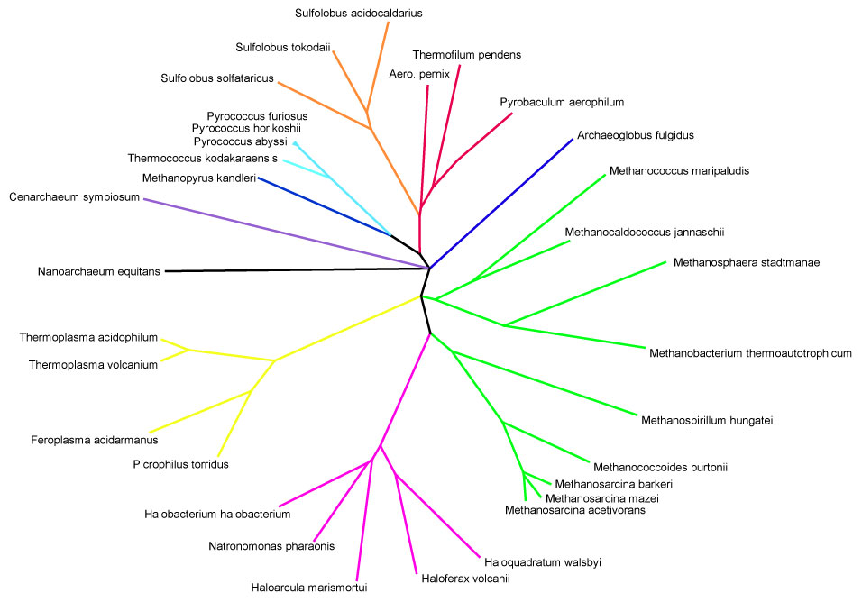
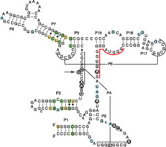
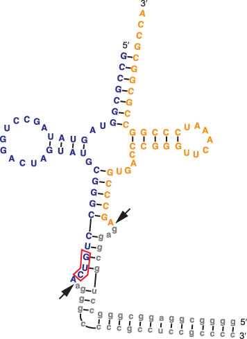
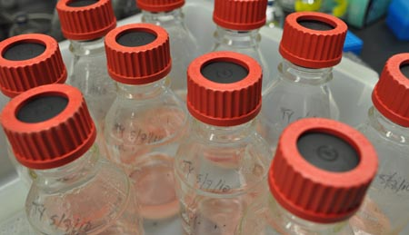
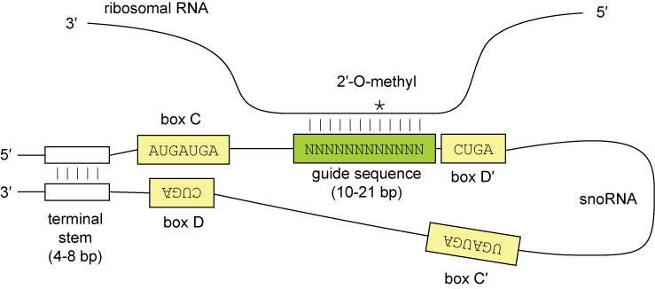
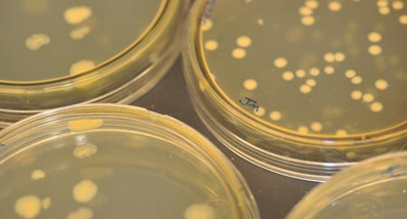
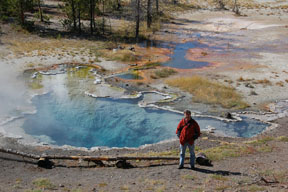

|
| Click on the images to enlarge | |
| Genome diversity in Archaea | |
| Pyrobaculum aerophilum RNase P RNA |
 Trans-spliced split tRNA in Aeropyrum pernix |
| Pyrobaculum cultures grown at 95°C | |
| Probabilistic non-coding RNA gene modeling | |
| Characterizing RNA transcripts | |
| Octopus Spring in Yellowstone National Park | |
{kind=link}
{kind=link}
{kind=link}
{kind=link}
{kind=link}
Non-coding RNAs
RNase P is best known for its role in removing the 5′ leaders of pre-tRNAs, an essential step in tRNA maturation. The RNA component of this holoenzyme is thought to be a universal feature of life. The inability to identify RNase P in some organisms including Pyrobaculum has sown doubts about this phenomenon. Using comparative genomics and improved computational methods, we, in collaboration with Venkat Gopalan's lab and Jim Brown's lab, have now identified a radically minimized form of the RNase P RNA in five Pyrobaculum species and the related crenarchaea Caldivirga maquilingensis and Vulcanisaeta distributa, all retaining a conventional catalytic domain, but lacking a recognizable specificity domain. These “Type T” RNase P RNAs are the smallest naturally occurring form yet discovered to function as trans-acting ribozymes. Due to the absence of almost half of a typical gene, the archaeal RNase P RNA covariance search model fails to detect their existence. We then developed a type T specific covariance model that located shortened RNase P RNA in Thermoproteus tenax, Thermoproteus uzoniensis, and Vulcanisaeta moutnovskia.
As in eukaryotes, pre-tRNAs in archaea often contain introns that are removed in tRNA maturation. Two unrelated archaeal species display unique pre-tRNA processing complexity in the form of “split” tRNA genes: 2-3 segments of tRNAs are transcribed from different loci, then trans-spliced to form a mature tRNA. Another rare type of pre-tRNA, found only in eukaryotic algae, is “permuted” where the 3′ half is encoded upstream of the 5′ half, and must be processed to be functional. Using an improved version of the gene-finding program tRNAscan-SE, comparative analyses, and experimental verifications, we have identified four novel trans-spliced tRNA genes, each in a different species of the Desulfurococcales branch of the Archaea. Additionally, we discovered the first examples of permuted tRNA genes in Archaea, which appear to be permuted in the same arrangement seen previously in red alga. These findings illustrate that split tRNAs are sporadically spread across a major branch of the Archaea, and that permuted tRNAs are a new shared characteristic between archaeal and eukaryotic species. The split tRNA discoveries also provide new clues to their evolutionary history, supporting hypotheses for recent acquisition via viral or other mobile elements.
The box H/ACA RNA gene family is one of the largest non-protein-coding gene families in eukaryotes and archaea. We developed snoGPS, a computational screening program for H/ACA snoRNAs, and initially applied it to Saccharomyces cerevisiae. We then extended our method to screen for H/ACA RNAs in human, mouse, and rat genomes. Complementing extensive cloning experiments performed by others, our findings include the detection and experimental verification of seven new mammalian H/ACA RNAs and the prediction of 23 new H/ACA RNA pseudouridine guide assignments. These assignments include four for H/ACA RNAs previously classified as orphan H/ACA RNAs with no known targets. We also determined systematic syntenic conservation among human and mouse H/ACA RNAs. Furthermore, 82 of 97 ribosomal RNA pseudouridines and 18 of 32 spliceosomal RNA pseudouridines in mammals have been linked to H/ACA guide RNAs.
Archaeal Biology
Many archaea live in hostile environments, from salt lakes to acidic hot springs, but they can be very difficult to grow and study in the laboratory. We teamed up with Chad Saltikov (METX of UCSC), Sorel Fitz-Gibbon (UCLA) and Christopher House (Pennsylvania State University), with the support of Joint Genome Institute, to sequence five closely-related heat-loving archaea (Pyrobaculum arsenaticum, Pyrobaculum calidifontis, Pyrobaculum islandicum, Thermoproteus neutrophilus, and Caldivirga maquilingensis) found in various hot springs from Iceland to the Philippines. These species belong to a unique group of archaea that can use sulfur compounds and toxic metals such as arsenic and selenium to power their cells. They use these compounds in much the same way that human cells use oxygen. These genomes are currently available at the UCSC Archaeal Genome Browser.
The mixture of eukaryotic and bacterial features in transcription and translation mechanisms also prompts the interest of better understanding the transcription unit structure in archaea. Existing computational algorithms for operon predictions are tailored and validated largely with bacterial training data, which may not be well applicable to archaea. Previous studies on archaeal transcriptional and translational signals limited the analyzed region and focused only on a small portion of genes in a genome. We extended the search area and identified promoters and Shine-Dalgarno motifs in 46 archaeal genomes. Besides recognizing the general patterns of transcript structure in these genomes, the analyzed results revealed that the domination of leadered and leaderless transcripts are equally spread in Crenarchaeota and Euryarchaeota, the two main archaeal phyla. We also identified and experimentally verified internal promoters within upstream coding regions, and uncovered Shine-Dalgarno-less leadered transcripts in Pyrococcus furiosus. These findings suggest the complexity of archaeal transcription units and serve as a base for novel gene finding including the elusive Pyrobaculum RNase P, and permuted and recently split tRNAs in archaea.
Hyperthermophilic crenarchaea in the genus Pyrobaculum are notable for respiratory versatility, but relatively little is known about the genetics or regulation of crenarchaeal respiratory pathways. We measured global gene expression in Pyrobaculum aerophilum cultured with oxygen, nitrate, arsenate and ferric iron as terminal electron acceptors to identify transcriptional patterns that differentiate these pathways. We also compared genome sequences for four closely related species with diverse respiratory characteristics (Pyrobaculum arsenaticum, Pyrobaculum calidifontis, Pyrobaculum islandicum, and Thermoproteus neutrophilus) to identify genes associated with different respiratory capabilities. Specific patterns of gene expression in P. aerophilum were associated with aerobic respiration, nitrate respiration, arsenate respiration, and anoxia. Functional predictions based on these patterns include separate cytochrome oxidases for aerobic growth and oxygen scavenging, a nitric oxide-responsive transcriptional regulator, a multicopper oxidase involved in denitrification, and an archaeal arsenate respiratory reductase. We were unable to identify specific genes for iron respiration, but P. aerophilum exhibited repressive transcriptional responses to iron remarkably similar to those controlled by the ferric uptake regulator in bacteria. Together, these analyses present a genome-scale view of crenarchaeal respiratory flexibility and support a large number of functional and regulatory predictions for further investigation.